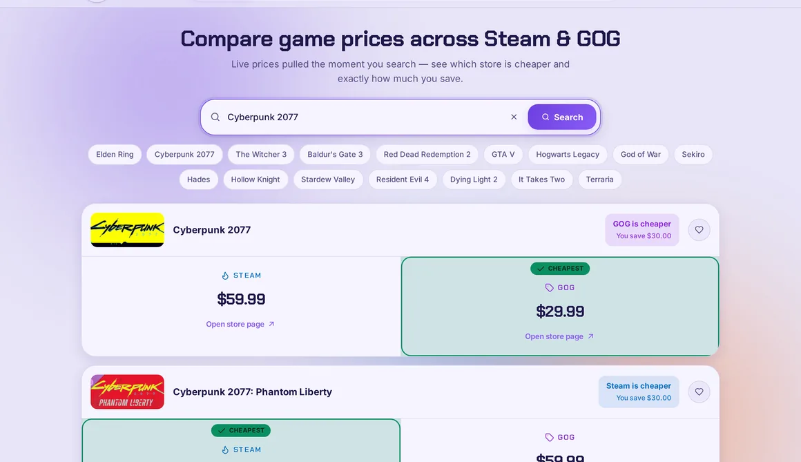
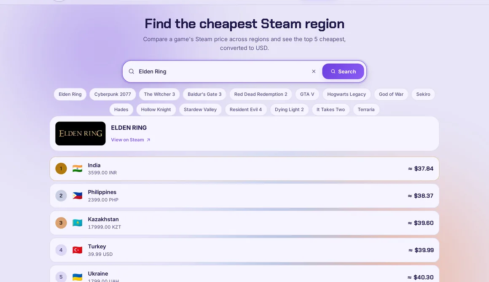
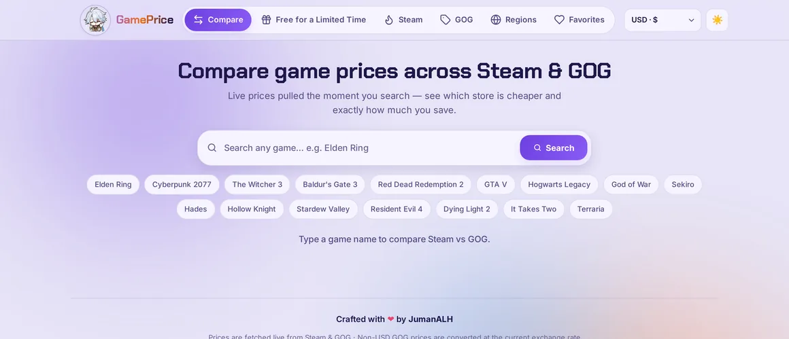
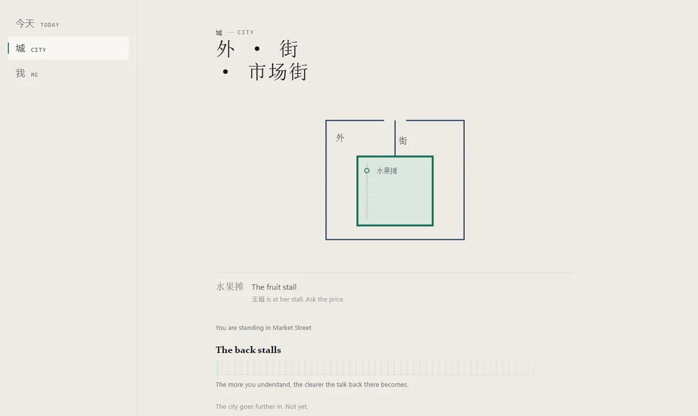
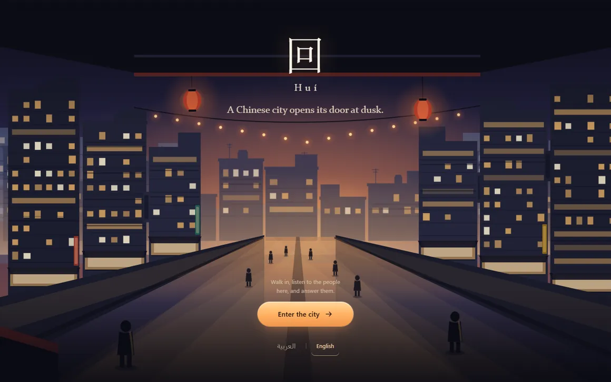
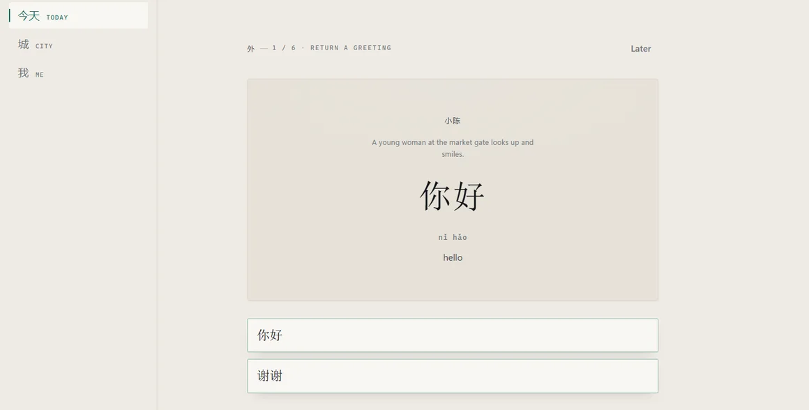
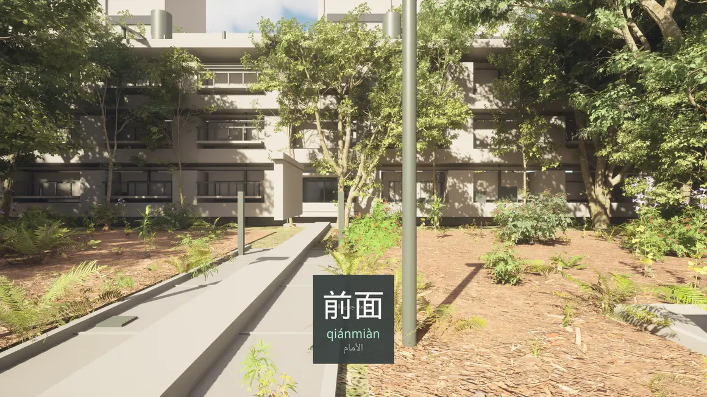
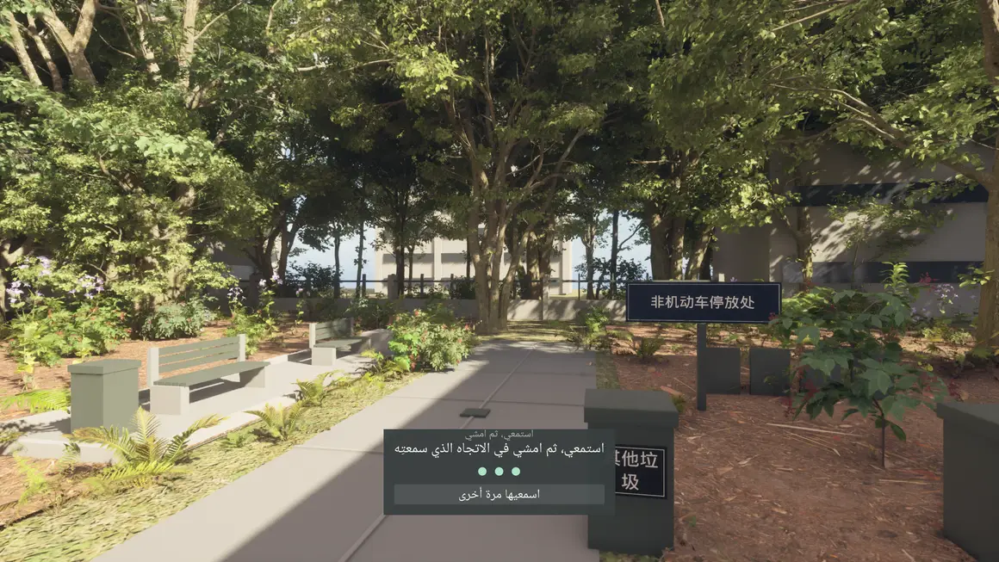
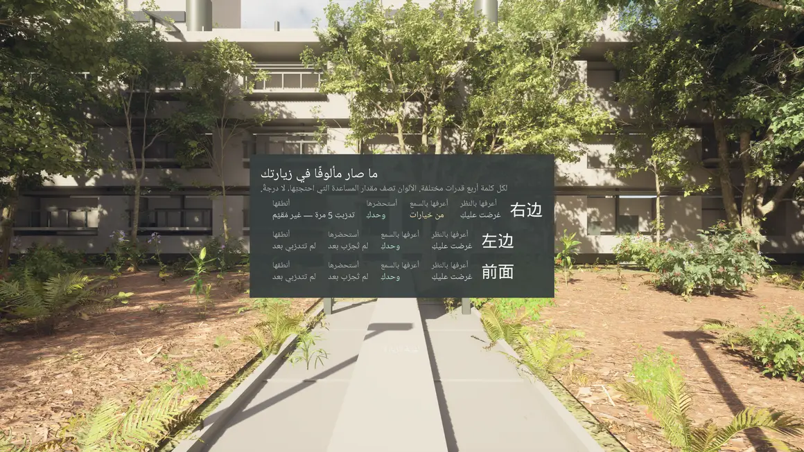

Juman Al-Huthaili
I study security. I build with AI. I keep going back to the questions in between.
- Studying
- Information Security, University of Hail
- Graduating
- Summer 2027
- GPA
- 3.813 / 4.00
- Based in
- Hail, Saudi Arabia
Juman Al-Huthaili
I study security. I build with AI. I keep going back to the questions in between.
01 currently
GamePrice runs in production and anyone can use it. It compares game prices between two stores and answers a question I actually had.
Huí, a Chinese-learning project that keeps changing shape. Two stages run in a browser. A third was prototyped in Unreal Engine and is still in development.
Two advisory committees and a gaming team at the University of Hail. Building things alone is easier. Building them with other students is more useful.
02 gameprice
I could not answer that without opening six tabs, so I built the thing that answers it in one.
plus Saudi Arabia, always



Prices are fetched when you search rather than read out of a database that went stale last week. That was the whole point of building it.
03 huí
Experimental. In development.
A Chinese-learning project I keep taking apart and rebuilding. It is also where the shape framing this page came from.
01 the idea
Flashcards taught me to recognise 前面. They did not teach me to notice it. So I started building the version where you have to walk past it.

02 what exists
The exchange
Someone says something to you and you answer. The reply then tells you why your answer worked. Hanzi, pinyin, English and Arabic sit together, because the second translation is where meaning usually falls out.
Built · runs in a browser
Sound, and keeping score honestly
Listening, pronunciation, and a record of every word across four separate abilities — recognise it, hear it, recall it, say it — rather than one number pretending to be mastery.
Built · 464 automated tests passing
The world
The same idea moved into Unreal Engine: a walkable residential garden where a word is attached to the place it describes. It packages, it runs, and it holds sixty frames a second at the ninety-ninth percentile. It is also one small place and one short visit.
Prototype · in development, not released


The three screens below are from the packaged Unreal build, captured at 2560×1440 and not retouched. It is a prototype rather than a product, and the interface still says so out loud.



03 what it taught me
Two stages run in a browser and a third was prototyped in Unreal Engine. None of it is released, so there is no link to give you yet. It stays on this page because unfinished work is still work, and this is the project teaching me the most.
04 ai
What the model is and where it stops.
Working with a model inside a real codebase instead of a chat window.
The API layer, where you stop being a user and start being a builder.
Handing off work that is not code.
Still open. Currently exploring Claude Code workflows on my own projects.
I don't want AI to do the learning for me. I want it to raise the ceiling on what I can build, while still making me understand the system underneath.
Completed through Claude Academy. Listed because of what each one changed about how I work, not because a certificate is worth anything on its own.
05 security
Coursework across information security, network security, and the governance side of the field. Current GPA 3.813 out of 4.00.
Cooperative training inside a working cybersecurity department: network security, governance, risk and compliance, and the day-to-day of securing a real organisation rather than a lab.
Ongoing. The specific work is internal, so it stays off this page.
06 campus
Sep 2024
Cybersecurity Club, University of Hail
Part of the club's core team. Security awareness, student activities, and campus events, which is where I learned that the technical part is rarely the hard part.
Nov 2025
Information Security Department
Student representative for my own specialisation. Curriculum feedback, aligning the programme with what the industry actually asks for, and carrying student concerns into the room where they can be acted on.
Dec 2025
Cybersecurity Club, University of Hail
Leading the team, planning events, and using games as a way to get students who would not attend a security seminar into the room anyway.
Apr 2026
College of Computer Science and Engineering
Representing female students across every department in the college, bringing student perspective into academic governance and improvement work at college level.
07 toolbox
08 contact